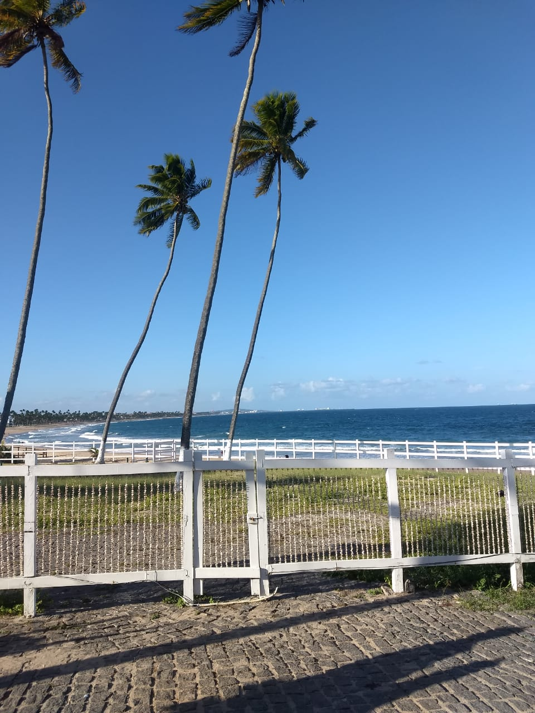
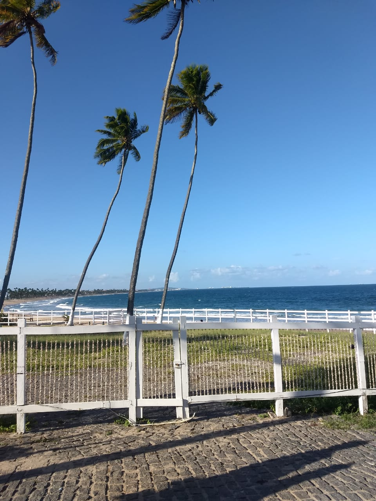

Recife é a cidade que a maioria dos meus parentes moram, sempre que viajamos para Pernambuco é lá que ficamos acomodados, porém, é um pouco difícil ficar somente nessa cidade, visto que Pernambuco inteiro é maravilhoso. Ainda em Recife, conheci diversos lugares maravilhosos, como o Parque das Esculturas Brennand, Praia de Boa Viagem e o Marco Zero, que é conhecido como o local de fundação da cidade do Recife e também como ponto inicial de contagem das distâncias calculadas a partir da cidade.
 
